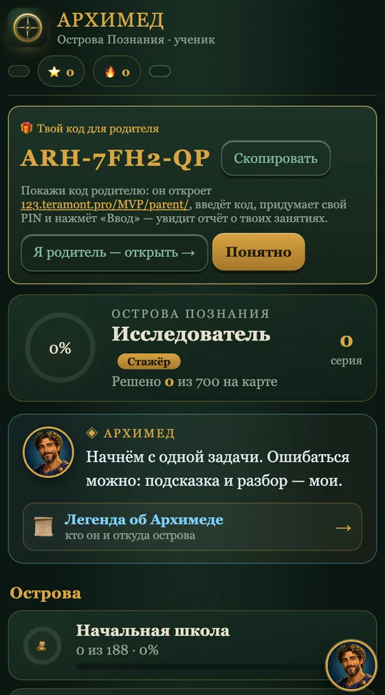
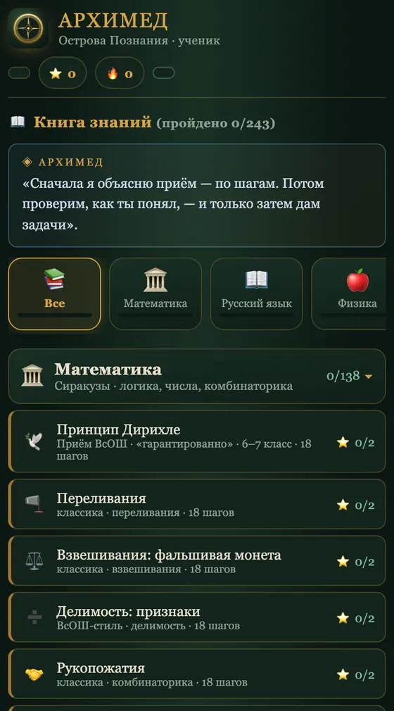
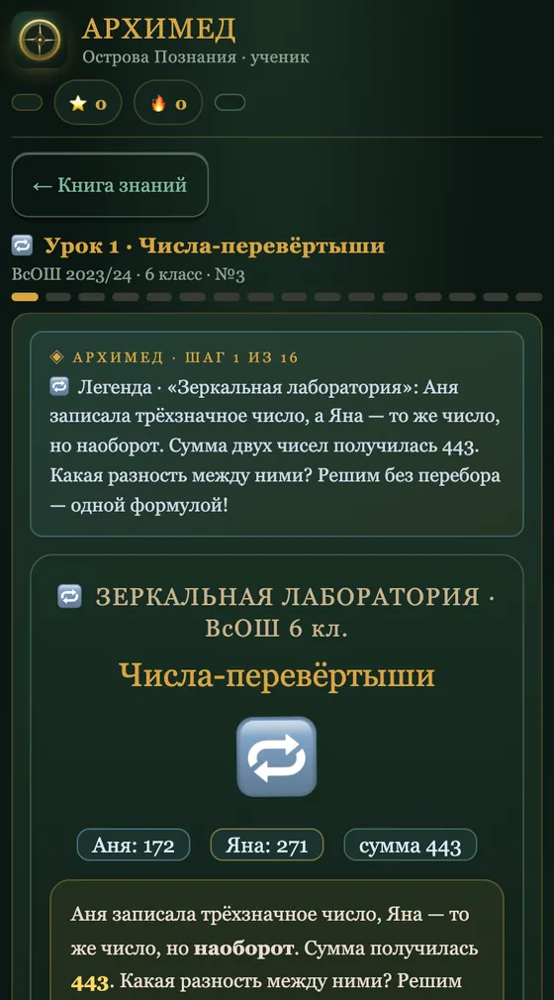
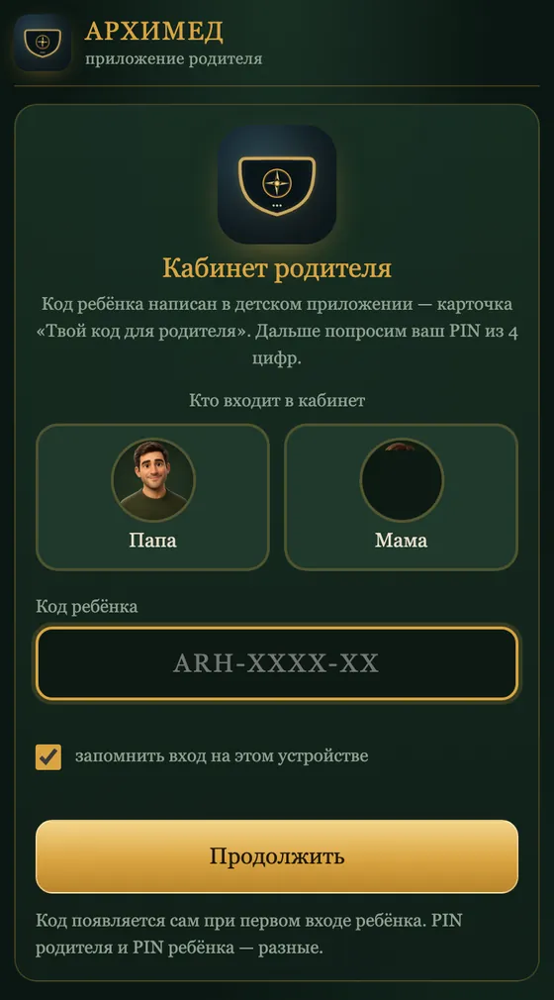
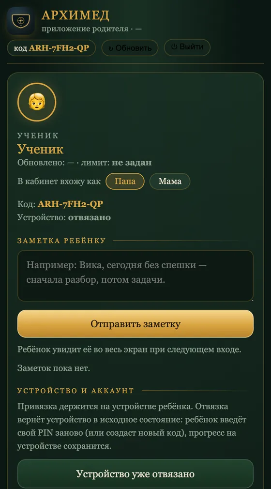

Школьная программа 1–9 класса, разобранная глубже, чем на уроке, и подготовка к олимпиадам поверх неё. Два приложения: одно ребёнку, другое вам. Оба открываются в браузере и ставятся на телефон как обычное приложение — без магазина, без установки, без регистрации по почте. Читается за пять минут.
АРХИМЕД — это школьная программа 1–9 класса, разобранная глубже, чем на уроке, и олимпиадный слой поверх неё. Ребёнок идёт по карте островов: математика, физика, химия, информатика, русский язык, начальная школа.
В каждом уроке персонаж Архимед сначала объясняет приём по шагам, потом даёт проверить, понял ли ты, и только потом — задачу. Ошибиться можно: на каждую задачу есть лестница подсказок и полный разбор.
И с Архимедом можно поговорить голосом. Это помощник на искусственном интеллекте: он слышит вопрос, отвечает вслух, объясняет приём своими словами, разбирает ошибку и договаривает то, что осталось непонятным в уроке. Ребёнку не нужно печатать — достаточно спросить.
Диплом всероссийской олимпиады — это поступление в вуз без экзаменов и сто баллов там, где их не хватило. Дверь открыта каждому: школьный этап пишут миллионы детей. А вот чем всё заканчивается.
Между школьным этапом и этим финалом нет ничего таинственного. Там приёмы: инвариант, чётность, принцип Дирихле, оценка и пример, выигрышная стратегия. Каждый можно объяснить шестикласснику за вечер. Просто в школьной программе их нет — ни одного.
Репетитор их знает. Он стоит как месяц занятий, приходит два раза в неделю и всё равно не даёт главного — порядка: что учить сейчас, а что через год. Этот порядок и есть то, ради чего сделан АРХИМЕД.
Ребёнок ошибся — и получил не красный крест, а намёк. Ошибся снова — получил ход мысли. И только если совсем не вышло, увидит полное решение. «Просто задач» в приложении нет.
3996 подсказок на 700 задач — почти шесть на каждуюАрхимед разбирает приём по шагам и на каждом спрашивает, понял ли ты. Видео так не умеет: оно идёт дальше, даже если в комнате уже никто не понимает.
уроков 454 · шагов разбора 4533 · в среднем 9 шагов на урокНе отдельный кружок «для сильных», куда ещё надо попасть. Ребёнок проходит дроби — и тут же, на том же острове, встречает олимпиадную задачу, которая на дробях и держится.
79 олимпиадных уроков внутри общей карты 1–9 классаЭто не вежливость. Ребёнок, который боится ошибиться, олимпиадную задачу просто не начнёт: там первые двадцать минут всегда ничего не выходит, и это нормальная часть работы.
Что решал, где застрял, сколько сидел. И ни одной чужой задачи: кабинет показывает только то, что по классу вашего ребёнка.
Снимки сделаны с работающего приложения, а не нарисованы.
Листайте ленту пальцем ←→





Помощник живёт в приложении ученика и знает, какой урок сейчас открыт, — поэтому его можно спрашивать не «вообще», а по делу: «почему здесь 99?», «объясни принцип Дирихле», «я не понял третий шаг».
Кнопка у помощника в углу экрана. Браузер спросит разрешение на микрофон — его надо дать один раз.
Внизу появится полоска состояния: видно, что Архимед слушает. Он отвечает голосом и подстраивается под то, что сейчас на экране.
Или коснитесь полоски состояния. Разговор выключается, урок остаётся на месте.
Помощник — дополнение к уроку, а не замена. Подсказки внутри задачи по-прежнему ведут к решению ступенями и не выдают ответ сразу.
Имя, класс и режим: Новичок — Архимед подробно объясняет каждый приём, Олимпиец — объяснения короче, задания смелее. Потом придумывает свой PIN из четырёх цифр.
Карточка «Твой код для родителя», вид ARH-XXXX-XX. Его надо показать вам —
один раз.
123.teramont.pro/MVP/parent/ → выбираете «Папа» или «Мама» → вводите код
ребёнка → придумываете свой PIN. Детский и родительский PIN разные, и это важно.
Магазин не нужен: страница сама ставится на экран «Домой» и дальше открывается без адресной строки, как любое приложение. Работает и без интернета — уроки и задачи уже лежат на устройстве.
Откройте 123.teramont.pro/MVP/ в Safari и нажмите значок «Поделиться» — квадрат со стрелкой вверх внизу экрана.
В открывшемся списке пролистайте вниз и выберите «На экран „Домой“».
Нажмите «Добавить». Значок встанет на экран рядом с остальными приложениями.
Схемы нарисованы: снять системное меню iPhone изнутри страницы нельзя.
Откройте 123.teramont.pro/MVP/ и нажмите три точки в правом верхнем углу.
Выберите «Установить приложение». В некоторых браузерах пункт называется «Добавить на главный экран».
Подтвердите установку — значок появится на главном экране.
Схемы нарисованы: системное меню браузера изнутри страницы не снять.
Кабинет родителя ставится так же — только откройте сначала
123.teramont.pro/MVP/parent/. Тогда на телефоне будет два значка:
детский и ваш.
Зайдите в кабинет родителя и нажмите «Отвязать устройство». Ребёнок введёт PIN заново, прогресс останется на месте.
Он всегда на первом экране приложения ученика, в карточке «Твой код для родителя». Кнопка «Скопировать» рядом.
Приложение работает: уроки и задачи лежат на устройстве. Отчёт родителю уедет, когда связь вернётся.
В приложении ученика нажмите «Выйти» и пройдите знакомство заново. Решённое сохранится.
Не покупайте курс. Не составляйте расписание.
Просто дайте ребёнку одну задачу сегодня.
Архимед покажет приём, разрешит ошибиться и разберёт ошибку.
Завтра ребёнок попросит вторую сам — и вот тогда начнётся самое интересное.
А через несколько лет окажется, что лифт, о котором мы говорили в начале, всё это время ехал.